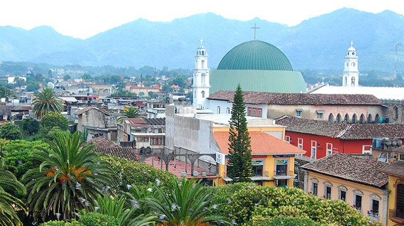
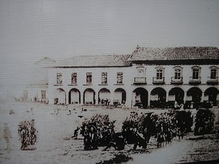
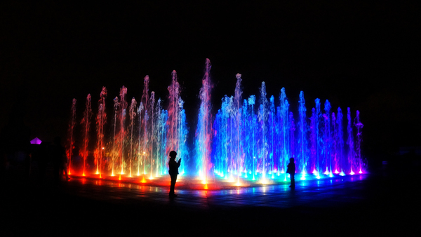
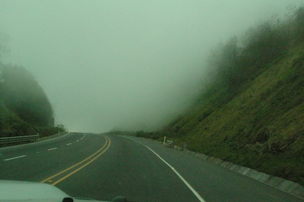

SIGNIFICADO
La palabra 'Huauchinango' o " Cuauchinanco" se deriva del vocablo náhuatl , proviene de la raíz "cuautli": árbol; "chinamitli": muralla y "co": en; lo que se interpreta como “Lugar Rodeado de árboles”. En la localidad también se interpreta como "Lugar cercado de palos". Es en si una representación del habla nahuatl.
El nahuatl La lengua que predomina en las comunidades alrededor de Huauchinango es el nahuatl, lengua que se ha ido perdiendo al pasar de los años pero usada aun por habitantes de Cuacuila, Naupan, etc, asi como por comerciantes que llegan a la ciudad para comercialiazar productos que se cultivan en la region, dicha lengua representa la raiz de la ciudad y la cual escuacharla, escribirla y tratar de hablarla es todo un reto, existen escuelas en las cuales la enseñanza es en lengua nahuatl asi como en español.

Aradith cruz romero.
HISTORIA
A partir de un asentamiento prehispánico llamado "Cuauchinanco", cuyo significado es “en la muralla de árboles” o “lugar cercado de bosques”. Sus primeros pobladores fueron de origen chichimecha, se establecieron entre los años 1116 y 1121, cuando Xolotl ordena a su hijoNopaltzin buscar un lugar para establecer su propio imperio asentándose al margen del ríoTexcapalapa, hoy río Texcapa, el cual circunda esta población.
Dada la cantidad y calidad de los recursos naturales con que cuenta esta, a mediados del Siglo XV, los pueblos de esta región fueron sometidos por los Mexicas con lo cual el dominio chichimeca quedó reducido a tributario de laTriple Alianza
El 26 de junio de 1949 se inaugura el centro escolar "Ing. Carlos I. Betancourt"’ en la zona oriente de la ciudad. El 16 de agosto de 1952 se construye el primer rastro municipal. El 16 de agosto de 1953 se inaugura el mercado municipal.


Aradith cruz romero
CLIMAS
La situación geográfica, la diversidad de alturas y las áreas naturales le han conferido a Huauchinango una condición climatológica de las más variadas del país.
La tierra fría se ubica entre los 1.500 y 2.000 msnm y la templada entre los 700 y los 1.500 msnm.
Los climas pueden identificarse como cálido, semicálido y templado frío. En primavera el termómetro registra una temperatura de 26 °C, que en mayo alcanza los 28 °C. Al inicio del verano se establece la temporada de lluvias, donde la temperatura desciende a los 20 °C. En otoño el clima frío se agudiza y registra 10 °C, pero la época de frío más cruda inicia en noviembre y perdura hasta febrero, en esta se llegan a observar temperaturas cercanas a los 0 °C. La temperatura medial anual se sitúa en los 14 °C.

Aradith Cruz Romero